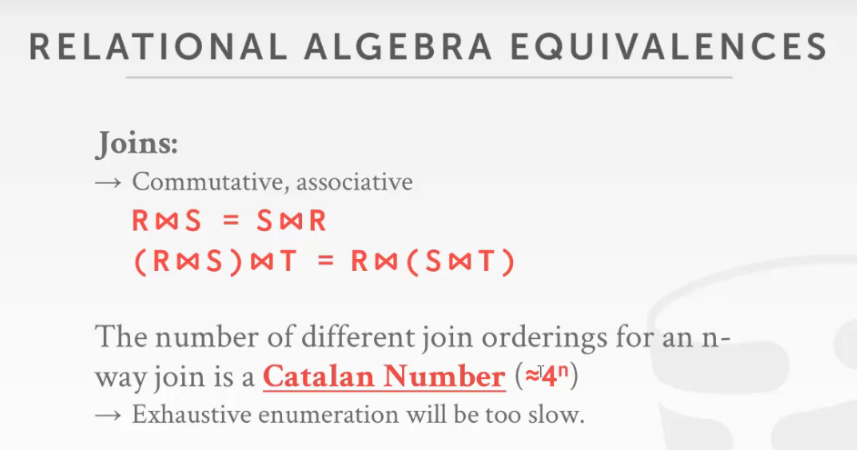
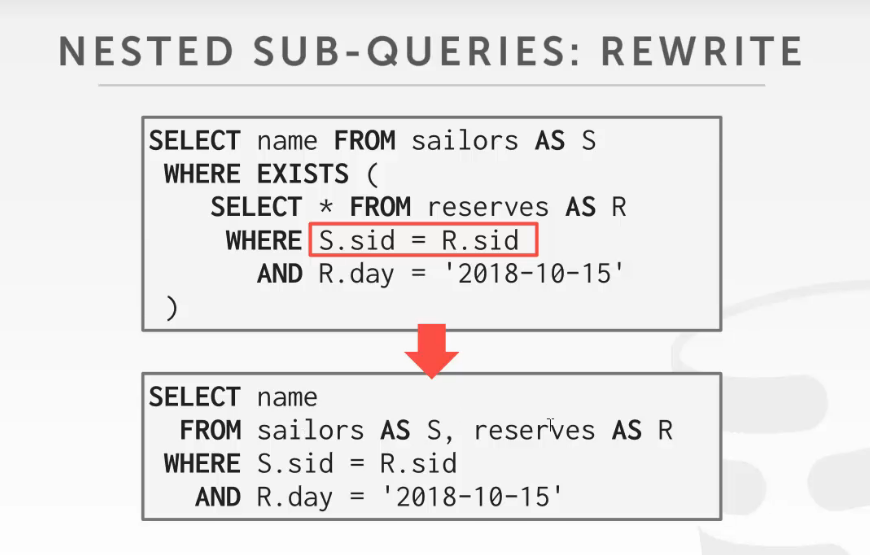
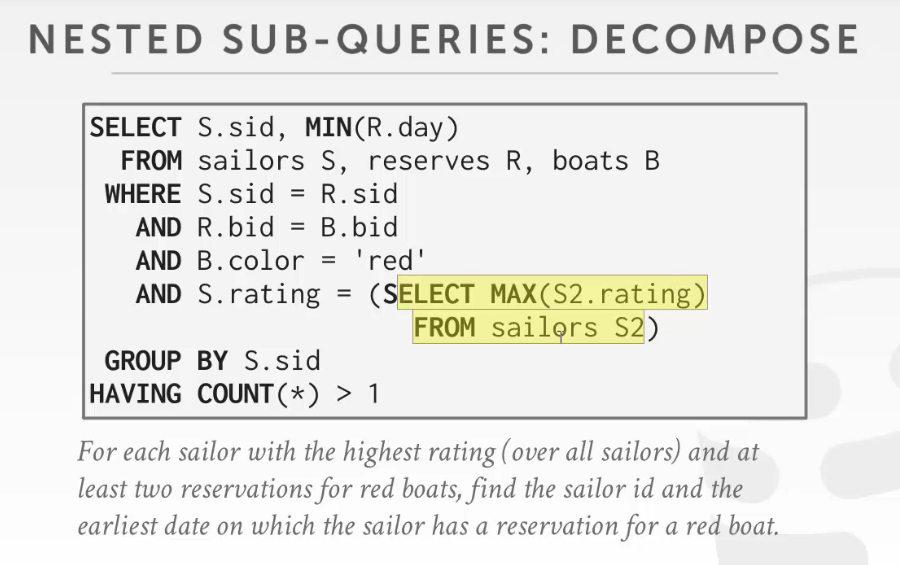

Query optimization
为什么会有优化器的存在？
SQL是声明式的，它只说明了需要的数据（答案）是什么，但没有说明要以什么方式去获取数据
因此DBMS可以对语句进行优化，从而以最小的成本获取相同的数据
因此有了众多SQL优化器
IBM System R
从IBM SYSTEM R，就开始了优化器的历程
一个争论：人为制定的执行计划和机器做出的执行计划，哪个效率会高？
因此DBMS在执行上，有以下两个流派：
- 一个是SQL为代表的，机器对语句进行优化
- 另一个是类似flink（虽然有插件，可以直接写SQL），但是flink是要用户直接写具体语句的执行计划，流式处理系统
而DBMS对SQL进行优化，又有以下两个方向：
Heuristice/rules
基于规则（启发式）的查询模型
基于一些规则或者变化的手段，用来优化用户SQL中比较低效的部分
- 规定一些查询优化的trick，将语句等效的替换或变换，然后获取高效的性能
重写SQL查询，去掉一些stupid或inefficient的查询
需要查询catalog（元数据），需要看一下数据库表行列的情况
- 但是不需要数据的具体情况，即发现数据库有索引就直接走索引，不用关心数据的分布以及直方图等信息
Cost-based search
基于代价的查询模型
需要构建代价模型，再判断不同的执行计划的开销是多少，从而选出最优的执行计划
因此，需要知道具体数据的分布（需要知道算子要处理多少数据，才能够知道代价是多少）
本节主要研究的是基于规则的查询模型
Architecture

SQL rewriter
对SQL语句进行一些预处理，在SQL的文本级别上做一些简单的优化
Parser
将SQL语句转化为抽象语法树（abstract syntax tree）
Binder
语法树会涉及表的名称，列的名称；而这些数据和DBMS里面的名称一般是不一样的
- 所以需要将SQL中数据表的id、列id，绑定（bind）到system catalog中数据表的id、列id
- 如果表或列不存在，就会报错
Tree rewriter
把上面的抽象语法树转化成一个优化器可以工作的最原始的逻辑结构（又名正则化）
生成一个最原始的查询逻辑计划（logical plan）
Optimizer
接着生成optimizer（这是一个未优化的查询逻辑）
- 如果是启发式优化的，ruled based search，也叫做基于规则的查询，会查询一些系统的源数据，对查询进行优化
- 如果是代价式优化的，cost model，不光会查询系统的原数据，还是查询代价模型（比如说DBMS规定的一些代价模型）
最后会生成一个物理的查询计划physical plan，里面都是真正需要执行的算子
Logical vs physical phans
逻辑计划：关系代数级别的（join）
物理计划：怎么执行这个join（比如说怎么执行join，是用hash join，还是nested loop join）
在优化器中，逻辑计划和物理计划的算子都是由对应关系的
物理计划会制定一个具体的执行方式，是走索引还是走扫描
- 会根据具体的物理情况，决定使用哪些物理算子
- 物理算子和逻辑算子不一定是一对一的关系，一个逻辑算子可能会对应多个物理算子
Query optimization is NP-hard
优化器对查询的优化是一个很难的问题，以至于不知道是否有一个最优的结果存在，也就是NP问题
一种思路是，用Machine Learning对优化器进行优化，比如DB2就用了人工智能优化器
但是缺点是类似黑盒，即查询器的输出很难make sense，就人工智能也不知道为什么要选择这个方式
PS：近年又开始研究火起来了
而另一种思路是，辅助优化器对语句进行优化，即对于优化器给出的执行计划，提出建议
最后优化器自己综合做出决定
Relational algebra equivalences
关系代数的等价
- 如果两个关系表达式是等价的话，就表明二者输出的结果集是一样的；反之也是一样的
DBMS可以利用关系代数，从逻辑上判断两个执行计划是否是等价的，而不需要代价模型
同时，利用关系代数也可以实现SQL的重写
通过逻辑谓词的下推，实现了两个关系表达式的等效

将谓词进行分割

join的交换律
如果有n个表进行join，那么就有4^n种执行方法
早晚物化的问题
一方面，可以将不需要的数据舍弃掉，减少传输的数据量
另一方面，可以选择在join的时候就物化数据，或者最后再回表一次得到数据
但是这对于一个列存的数据库来说是无用的，因为它始终是最后才物化的
Logical query optimization
逻辑计划上的优化，需要先写一些规则，再让数据库去匹配（类似模式匹配）
缺点：无法比较计划和计划之间的好坏
这种方法不能自适应的评价计划和计划之间的好坏
选择方法一而不选择方法二的原因只能是因为你给的规则是这样写的，因为它没有代价模型，不能自己去判断
Split conjunctive predicates
将语句中的连接谓词分开
比如下图，将语句中用and连接的一串谓词分开

Predicate pushdown
谓词下推，谓词的执行越接近读表越好（可以提前过滤掉大量的无用数据）

Replace cartesian products
把笛卡尔积转换为join
两个表连表后（即笛卡尔积）再用条件判断，就相当于一个join了，所以就可以把笛卡尔积变为join

Projection pushdown
投影下推，发现很多时候我们只需要部分列的数据，整行的记录没必要全部往上传，所以就只传递部分数据即可

Nested sub-queries
针对嵌套的子查询，有两个优化的方向：
- 重写（Rewrite）：将里面和外面的查询重写成一个新的查询
- 解耦查询（Decompose）：不要让子查询一直阻塞在主查询里面（把它单独拿出来，提前执行）
Rewrite
发现可以用连表的方式来重写嵌套查询
比如下图，将两条查询SQL，优化为一条查询SQL
Decompose
可以预先执行一些查询语句，使得主查询不必一直阻塞在子查询上
- 如果不预先处理这个子查询的话，每拿一条记录都要再执行一遍这个子查询（浪费资源）
即，可以先把子查询做了，然后把结果放到单独的一个表里面（作为子查询的结果）
需要子查询语句的结果时，直接去里面读取即可

比如上面的SQL，发现SELECT MAX(S2.rating) FROM sailors S2的结果是一个不变的量
因此可以先执行该子查询，得到并储存结果，方便后续读取
而不是每次读取到这条语句的时候，都重复执行

Expression rewriting
对谓词表达式进行重写 ，让谓词本身变得更高效
可以给DBMS写入一些规则，然后让DBMS去SQL中查找符合规则的部分进行rewrite（类似模式匹配）
Impossible/unnecessary predicates
对于一些比较绝对的逻辑，可以直接优化
比如下图，1必然是不等于0的，所以这里可以直接优化为false，输出空结果即可

Join elimination
对于一些语句可以直接得到结果的，可以直接优化
比如下图，相当于自己和自己连表，然后查询的又是自己的全部数据
因此可以修改为为SELECT * FROM A;

Join elimination with sub-query
发现当前查询以及子查询在联表查询时，连接的都是同一张表

那么就可以改写为以下SQL

Merge predicates
将谓词进行合并

可以将谓词里面的数据范围进行合并

Cost model
Cost-based query planning
此前讨论的都是基于规则的优化（启发式），而后续则需要讨论基于开销的优化
基于开销的优化，需要根据数据库数据的具体分布等情况
对执行计划的花费开销进行比对，从而选出一个当前最优的方案
但是，这里对执行计划开销的估计，换一个数据库（或是机器硬件）就不适用了
- 比如说某个SQL的查询，在MySQL中执行是2W，在PG中执行是20W，这二者是没有任何比较性的
- 因为每个数据库对于查询复杂度的衡量，都是基于本身的体系衡量出来的，二者不能在不同的标准上进行比较
PS：估算SQL执行的开销，和计划列举的步骤是分开的

Cost model components
代价估算的三个方向：
Choice 1：Physical costs
物理代价（例如：需要多少CPU的计算，多少次IO，多少次miss cache，读取内存的开销，预取数据的开销）
极度依赖于硬件的性能（换一个硬件环境，估算的代价都会有变动）
这种估值方案经常出现在数据库一体机上（例如：Oracle，因为硬件是不变的）
或者SQL Server上，主要是Windows对硬件的性能有较深的把控
一般是商用的会做的比较细，开源的一般不会
Choice 2：Logical costs
逻辑开销，估算每个算子的开销
开销的计算和每个算子之间是独立的
需要数据的统计信息（比如分布之类的），以便知道算子处理多少数据，从而估计开销
Choice 3：Algorithmic costs
比较细的估计算子的开销，从算法的层次去估计开销
例如：join，具体分为几个步骤、每个步骤的时间复杂度是多少
Disk-based dbms cost model
因为目前主要研究的是基于磁盘的DBMS，所以相比CPU的开销，磁盘IO的开销更大，更值得关注
- CPU的开销几乎可以忽略
- 必须考虑随机IO和顺序IO（尽量将随机IO改为顺序IO）
同时，DBMS是完全控制了磁盘文件页的读取，所以可以在更细的粒度上管理磁盘页
Postgres costs model
PostgreSQL的代价估算模型
用魔法数将磁盘IO的开销和CPU计算的开销联系在一起
魔法数：用数个系数和某种算法，建立数据之间的关系（一般是写死的；根据经验得出来的）
比如说从硬盘中取数据，比从内存中取数据慢了400倍；顺序IO比随机IO快4倍
并且，DBMS中很多算法都是基于这个魔法数的，不能随意修改
IBM db2 cost model
与开销有关的几个因素：
- 系统本身的数据
- 硬件配置
- 存储器类型
- 通信的带宽（是单机还是分布式部署）
- 内存（缓存池）
- 并发环境（并发数量、隔离级别、锁的情况）
Conclusion
基于规则（启发式）的优化器，基于给定的规则去优化一个执行计划
- 数据的分布以及其他情况，是不需要了解的
- 只需要根据规则进行替换
而基于代价的优化器，需要知道数据的统计信息，比前者更加先进，更容易得到最优的执行计划